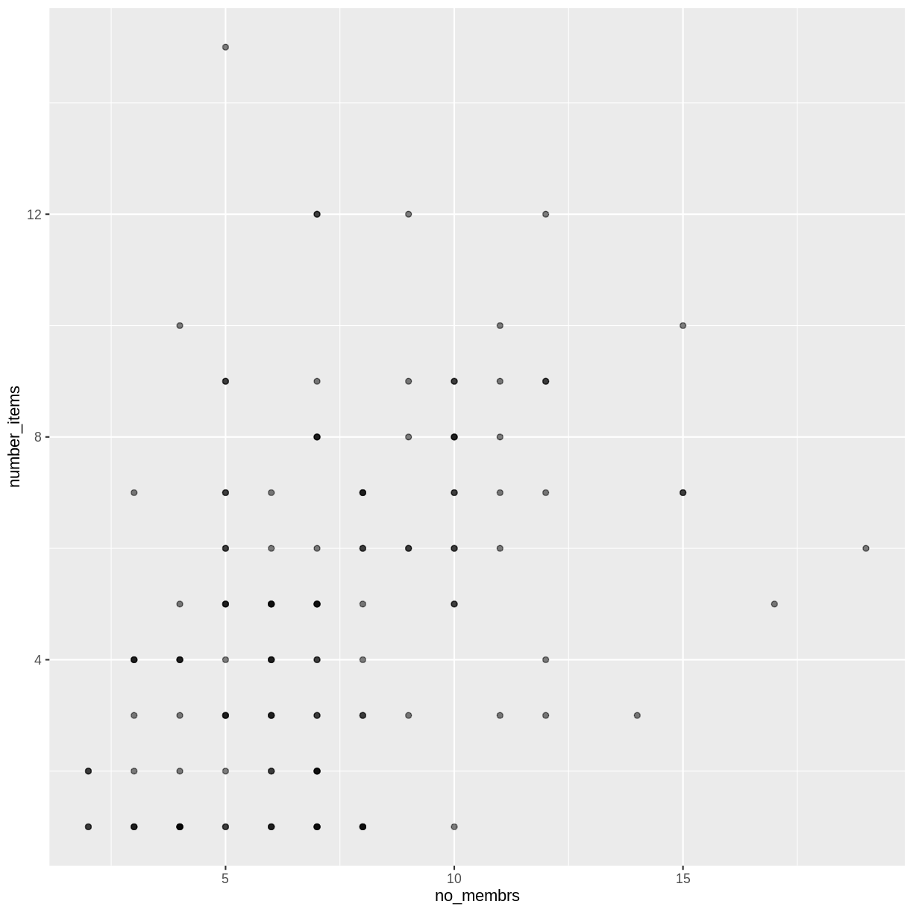
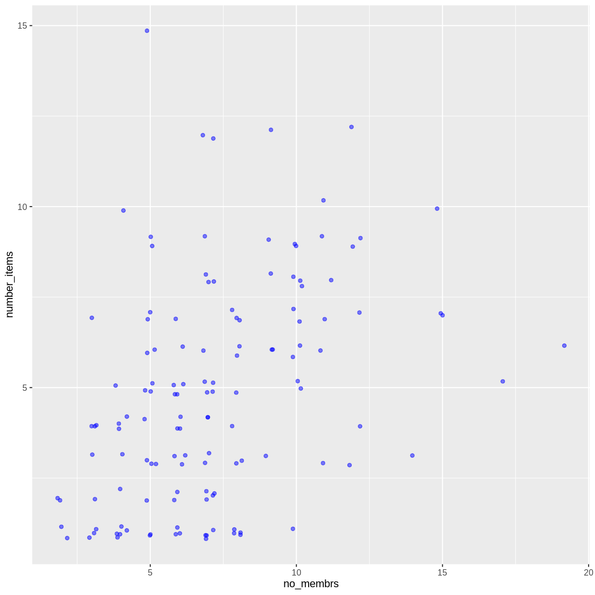
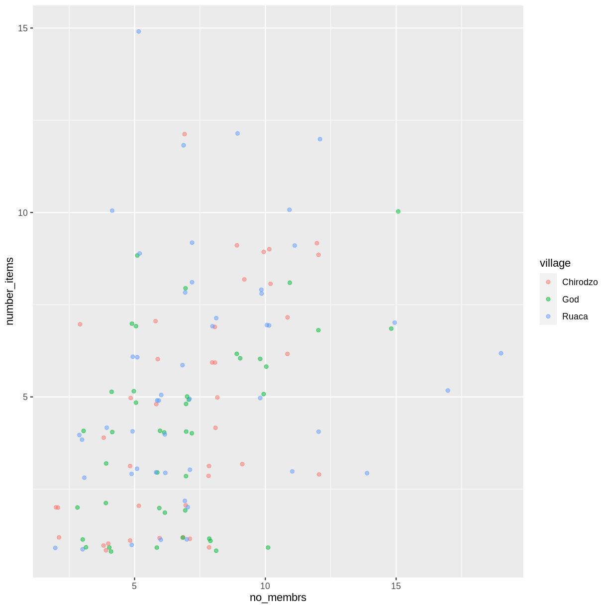
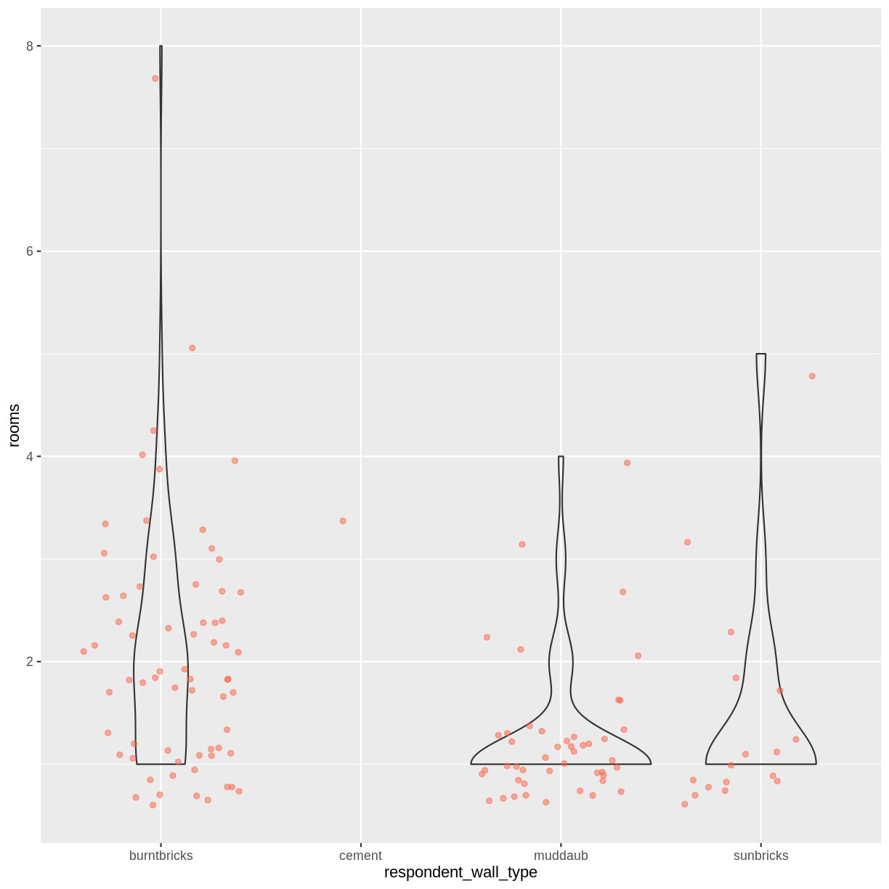
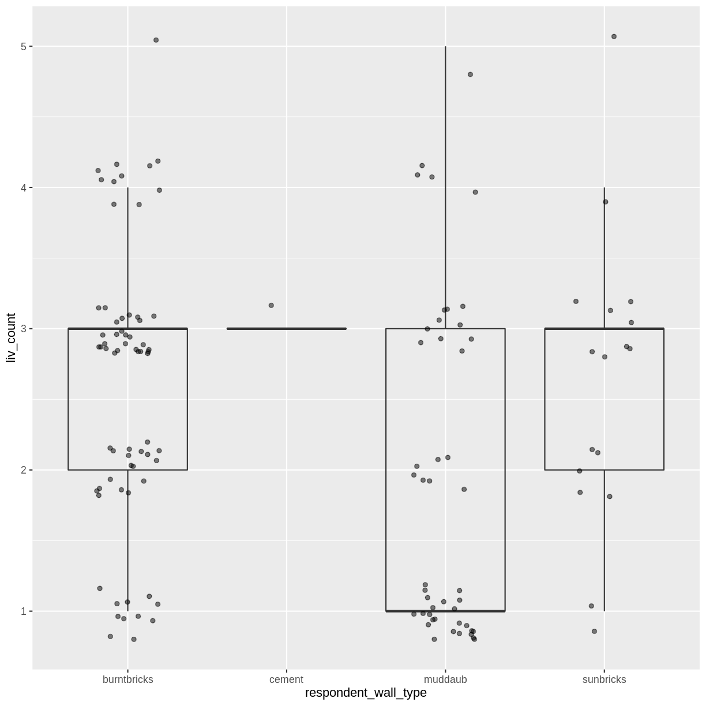
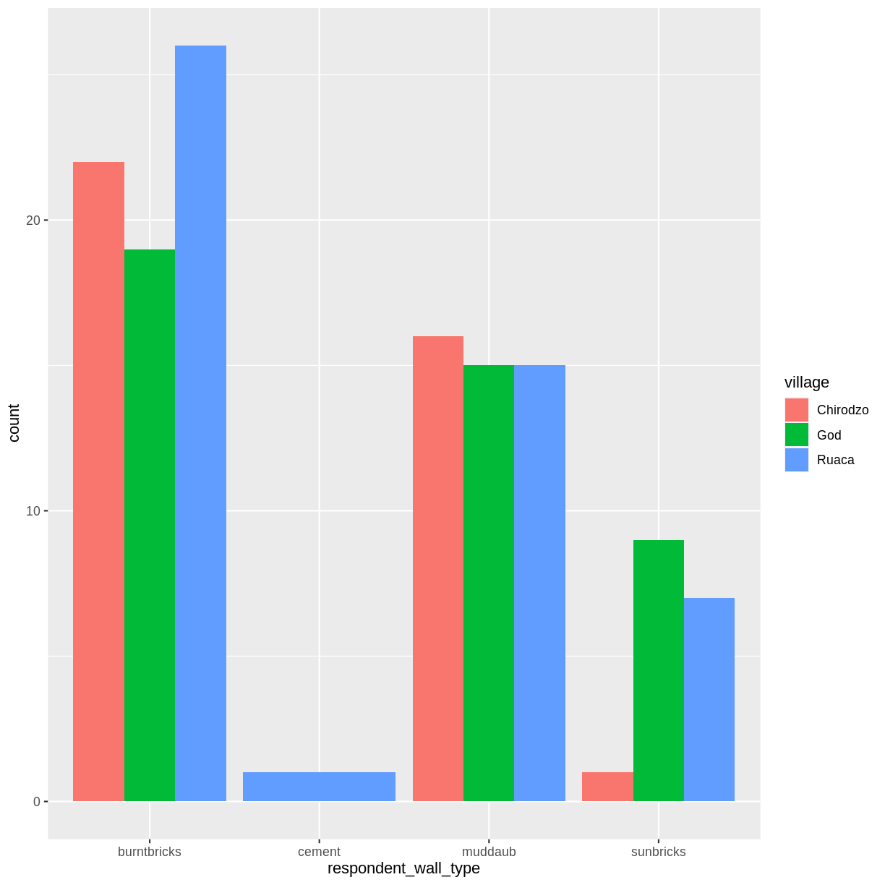
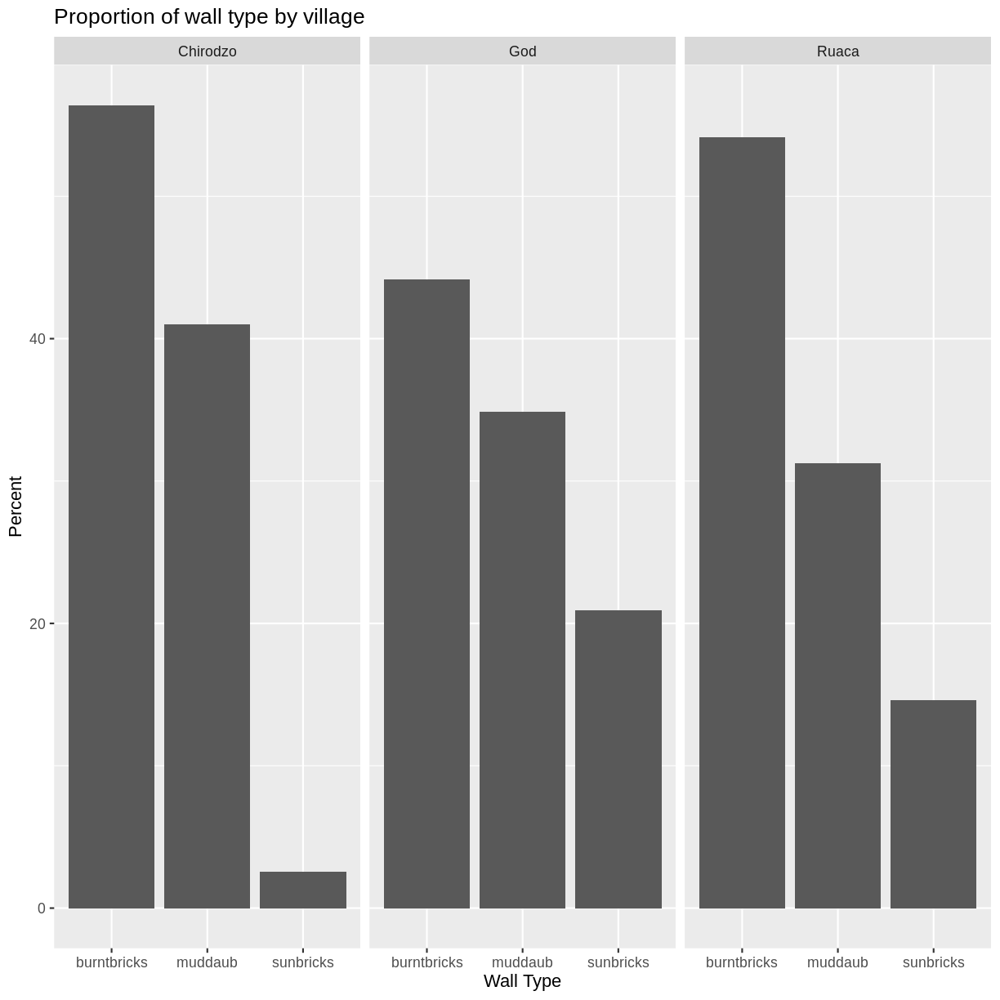
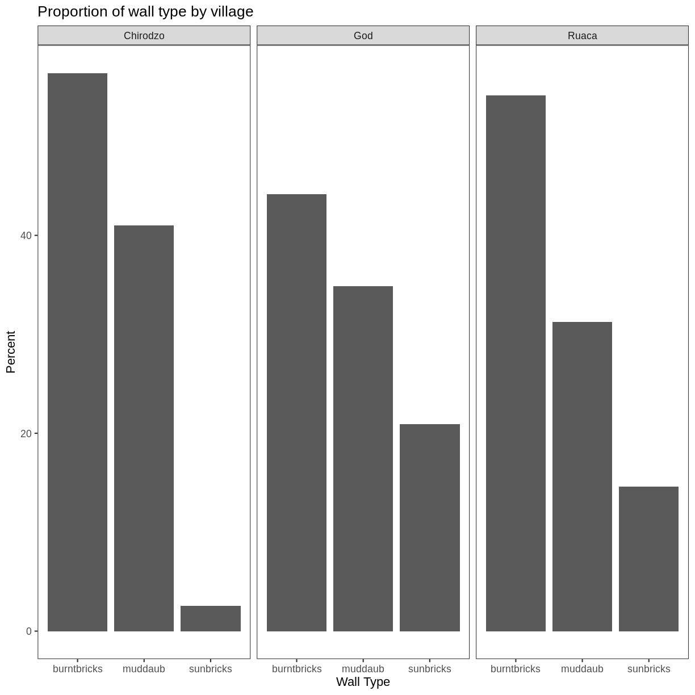

Data Visualisation with ggplot2
Overview
Teaching: 80 min
Exercises: 35 minQuestions
What are the components of a ggplot?
How do I create scatterplots, boxplots, and barplots?
How can I change the aesthetics (ex. colour, transparency) of my plot?
How can I create multiple plots at once?
Objectives
Produce scatter plots, boxplots, and time series plots using ggplot.
Set universal plot settings.
Describe what faceting is and apply faceting in ggplot.
Modify the aesthetics of an existing ggplot plot (including axis labels and colour).
Build complex and customized plots from data in a data frame.
We start by loading the required package. ggplot2 is also included in the
tidyverse package.
library(tidyverse)
If not still in the workspace, load the data we saved in the previous lesson.
interviews_plotting <- read_csv("data_output/interviews_plotting.csv")
── Column specification ────────────────────────────────────────────────────────
cols(
.default = col_logical(),
key_ID = col_double(),
village = col_character(),
interview_date = col_datetime(format = ""),
no_membrs = col_double(),
years_liv = col_double(),
respondent_wall_type = col_character(),
rooms = col_double(),
memb_assoc = col_character(),
affect_conflicts = col_character(),
liv_count = col_double(),
no_meals = col_double(),
instanceID = col_character(),
number_months_lack_food = col_double(),
number_items = col_double()
)
ℹ Use `spec()` for the full column specifications.
If you were unable to complete the previous lesson or did not save the data, then you can create it now.
interviews_plotting <- interviews %>%
## pivot wider by items_owned
separate_rows(items_owned, sep = ";") %>%
## if there were no items listed, changing NA to no_listed_items
replace_na(list(items_owned = "no_listed_items")) %>%
mutate(items_owned_logical = TRUE) %>%
pivot_wider(names_from = items_owned,
values_from = items_owned_logical,
values_fill = list(items_owned_logical = FALSE)) %>%
## pivot wider by months_lack_food
separate_rows(months_lack_food, sep = ";") %>%
mutate(months_lack_food_logical = TRUE) %>%
pivot_wider(names_from = months_lack_food,
values_from = months_lack_food_logical,
values_fill = list(months_lack_food_logical = FALSE)) %>%
## add some summary columns
mutate(number_months_lack_food = rowSums(select(., Jan:May))) %>%
mutate(number_items = rowSums(select(., bicycle:car)))
Error in eval(lhs, parent, parent): object 'interviews' not found
Plotting with ggplot2
ggplot2 is a plotting package that makes it simple to create complex plots
from data stored in a data frame. It provides a programmatic interface for
specifying what variables to plot, how they are displayed, and general visual
properties. Therefore, we only need minimal changes if the underlying data
change or if we decide to change from a bar plot to a scatterplot. This helps in
creating publication quality plots with minimal amounts of adjustments and
tweaking.
ggplot2 functions work best with data in the ‘long’ format, i.e., a column for every
dimension, and a row for every observation. Well-structured data will save you
lots of time when making figures with ggplot2
ggplot graphics are built step by step by adding new elements. Adding layers in this fashion allows for extensive flexibility and customization of plots.
To build a ggplot, we will use the following basic template that can be used for different types of plots:
<DATA> %>%
ggplot(aes(<MAPPINGS>)) +
<GEOM_FUNCTION>()
Remember from the last lesson that the pipe operator %>% places the result of the previous line(s) into the first argument of the function. ggplot is a function that expects a data frame to be the first argument. This allows for us to change from specifying the data = argument within the ggplot function and instead pipe the data into the function.
- use the
ggplot()function and bind the plot to a specific data frame.
interviews_plotting %>%
ggplot()
- define a mapping (using the aesthetic (
aes) function), by selecting the variables to be plotted and specifying how to present them in the graph, e.g. as x/y positions or characteristics such as size, shape, color, etc.
interviews_plotting %>%
ggplot(aes(x = no_membrs, y = number_items))
-
add ‘geoms’ – graphical representations of the data in the plot (points, lines, bars).
ggplot2offers many different geoms; we will use some common ones today, including:geom_point()for scatter plots, dot plots, etc.geom_boxplot()for, well, boxplots!geom_line()for trend lines, time series, etc.
To add a geom to the plot use the + operator. Because we have two continuous variables, let’s use geom_point() first:
interviews_plotting %>%
ggplot(aes(x = no_membrs, y = number_items)) +
geom_point()

The + in the ggplot2 package is particularly useful because it allows
you to modify existing ggplot objects. This means you can easily set up plot
templates and conveniently explore different types of plots, so the above plot
can also be generated with code like this, similar to the “intermediate steps”
approach in the previous lesson:
# Assign plot to a variable
interviews_plot <- interviews_plotting %>%
ggplot(aes(x = no_membrs, y = number_items))
# Draw the plot as a dot plot
interviews_plot +
geom_point()
Notes
- Anything you put in the
ggplot()function can be seen by any geom layers that you add (i.e., these are universal plot settings). This includes the x- and y-axis mapping you set up inaes().- You can also specify mappings for a given geom independently of the mapping defined globally in the
ggplot()function.- The
+sign used to add new layers must be placed at the end of the line containing the previous layer. If, instead, the+sign is added at the beginning of the line containing the new layer,ggplot2will not add the new layer and will return an error message.
## This is the correct syntax for adding layers
interviews_plot +
geom_point()
## This will not add the new layer and will return an error message
interviews_plot
+ geom_point()
Building your plots iteratively
Building plots with ggplot2 is typically an iterative process. We start by
defining the dataset we’ll use, lay out the axes, and choose a geom:
interviews_plotting %>%
ggplot(aes(x = no_membrs, y = number_items)) +
geom_point()

Then, we start modifying this plot to extract more information from it. For
instance, when inspecting the plot we notice that points only appear at the
intersection of whole numbers of no_membrs and number_items. Also, from a
rough estimate, it looks like there are far fewer dots on the plot than there
rows in our dataframe. This should lead us to believe that there may be multiple
observations plotted on top of each other (e.g. three observations where
no_membrs is 3 and number_items is 1).
There are two main ways to alleviate overplotting issues:
- changing the transparency of the points
- jittering the location of the points
Let’s first explore option 1, changing the transparency of the points. What we
mean when we say “transparency” we mean the opacity of point, or your ability to
see through the point. We can control the transparency of the points with the
alpha argument to geom_point. Values of alpha range from 0 to 1, with
lower values corresponding to more transparent colors (an alpha of 1 is the
default value).
Here, we change the alpha to 0.5, in an attempt to help fix the overplotting.
While the overplotting isn’t solved, adding transparency begins to address this
problem, as the points where there are overlapping observations are darker (as
opposed to lighter gray):
interviews_plotting %>%
ggplot(aes(x = no_membrs, y = number_items)) +
geom_point(alpha = 0.5)

That only helped a little bit with the overplotting problem, so let’s try option two. We can jitter the points on the plot, so that we can see each point in the locations where there are overlapping points. Jittering introduces a little bit of randomness into the position of our points. You can think of this process as taking the overplotted graph and giving it a tiny shake. The points will move a little bit side-to-side and up-and-down, but their position from the original plot won’t dramatically change.
We can jitter our points using the geom_jitter() function instead of the
geom_point() function, as seen below:
interviews_plotting %>%
ggplot(aes(x = no_membrs, y = number_items)) +
geom_jitter()
 The
The geom_jitter() function allows for us to specify the amount of random
motion in the jitter, using the width and height arguments. When we don’t
specify values for width and height, geom_jitter() defaults to 40% of the
resolution of the data (the smallest change that can be measured). Hence, if we
would like less spread in our jitter than was default, we should pick values
between 0.1 and 0.4. Experiment with the values to see how your plot changes.
interviews_plotting %>%
ggplot(aes(x = no_membrs, y = number_items)) +
geom_jitter(alpha = 0.5,
width = 0.2,
height = 0.2)

For our final change, we can also add colours for all the points by specifying
a color argument inside the geom_jitter() function:
interviews_plotting %>%
ggplot(aes(x = no_membrs, y = number_items)) +
geom_jitter(alpha = 0.5,
color = "blue",
width = 0.2,
height = 0.2)

To colour each species in the plot differently, you could use a vector as an input
to the argument color. However, because we are now mapping features of the
data to a colour, instead of setting one colour for all points, the colour of the
points now needs to be set inside a call to the aes function. When we map
a variable in our data to the colour of the points, ggplot2 will provide a
different colour corresponding to the different values of the variable. We will
continue to specify the value of alpha, width, and height
outside of the aes function because we are using the same value for
every point. Here is an example where we color points by the village
of the observation:
interviews_plotting %>%
ggplot(aes(x = no_membrs, y = number_items)) +
geom_jitter(aes(color = village), alpha = 0.5, width = 0.2, height = 0.2)

There appears to be a positive trend between number of household members and number of items owned (from the list provided). Additionally, this trend does not appear to be different by village.
Notes
As you will learn, there are multiple ways to plot the a relationship between variables. Another way to plot data with overlapping points is to use the
geom_countplotting function. Thegeom_count()function makes the size of each point representative of the number of data items of that type and the legend gives point sizes associated to particular numbers of items.interviews_plotting %>% ggplot(aes(x = no_membrs, y = number_items, color = village)) + geom_count()

Exercise
Use what you just learned to create a scatter plot of
roomsbyvillagewith therespondent_wall_typeshowing in different colours. Does this seem like a good way to display the relationship between these variables? What other kinds of plots might you use to show this type of data?Solution
interviews_plotting %>% ggplot(aes(x = village, y = rooms)) + geom_jitter(aes(color = respondent_wall_type), alpha = 0.5, width = 0.2, height = 0.2)
This is not a great way to show this type of data because it is difficult to distinguish between villages. What other plot types could help you visualize this relationship better?

Boxplot
We can use boxplots to visualize the distribution of rooms for each wall type:
interviews_plotting %>%
ggplot(aes(x = respondent_wall_type, y = rooms)) +
geom_boxplot()

By adding points to a boxplot, we can have a better idea of the number of measurements and of their distribution:
interviews_plotting %>%
ggplot(aes(x = respondent_wall_type, y = rooms)) +
geom_boxplot(alpha = 0) +
geom_jitter(alpha = 0.5,
color = "tomato",
width = 0.2,
height = 0.2) +
Error: <text>:8:0: unexpected end of input
6: width = 0.2,
7: height = 0.2) +
^
We can see that muddaub houses and sunbrick houses tend to be smaller than burntbrick houses.
Notice how the boxplot layer is behind the jitter layer? What do you need to change in the code to put the boxplot in behind the points such that it’s not hidden?
Exercise
Boxplots are useful summaries, but hide the shape of the distribution. For example, if the distribution is bimodal, we would not see it in a boxplot. An alternative to the boxplot is the violin plot, where the shape (of the density of points) is drawn.
- Replace the box plot with a violin plot; see
geom_violin().Solution
interviews_plotting %>% ggplot(aes(x = respondent_wall_type, y = rooms)) + geom_violin(alpha = 0) + geom_jitter(alpha = 0.5, color = "tomato")
So far, we’ve looked at the distribution of room number within wall type. Try making a new plot to explore the distribution of another variable within wall type.
- Create a boxplot for
liv_countfor each wall type. Overlay the boxplot layer on a jitter layer to show actual measurements.Solution
interviews_plotting %>% ggplot(aes(x = respondent_wall_type, y = liv_count)) + geom_boxplot(alpha = 0) + geom_jitter(alpha = 0.5, width = 0.2, height = 0.2)
- Add colour to the data points on your boxplot according to whether the respondent is a member of an irrigation association (
memb_assoc).Solution
interviews_plotting %>% ggplot(aes(x = respondent_wall_type, y = liv_count)) + geom_boxplot(alpha = 0) + geom_jitter(aes(color = memb_assoc), alpha = 0.5, width = 0.2, height = 0.2)

Barplots
Barplots are also useful for visualizing categorical data. By default,
geom_bar accepts a variable for x, and plots the number of instances each
value of x (in this case, wall type) appears in the dataset.
interviews_plotting %>%
ggplot(aes(x = respondent_wall_type)) +
geom_bar()

We can use the fill aesthetic for the geom_bar() geom to colour bars by
the portion of each count that is from each village.
interviews_plotting %>%
ggplot(aes(x = respondent_wall_type)) +
geom_bar(aes(fill = village))

This creates a stacked bar chart. These are generally more difficult to read
than side-by-side bars. We can separate the portions of the stacked bar that
correspond to each village and put them side-by-side by using the position
argument for geom_bar() and setting it to “dodge”.
interviews_plotting %>%
ggplot(aes(x = respondent_wall_type)) +
geom_bar(aes(fill = village), position = "dodge")

This is a nicer graphic, but we’re more likely to be interested in the
proportion of each housing type in each village than in the actual count of
number of houses of each type (because we might have sampled different numbers
of households in each village). To compare proportions, we will first create a
new data frame (percent_wall_type) with a new column named “percent”
representing the percent of each house type in each village. We will remove
houses with cement walls, as there was only one in the dataset.
percent_wall_type <- interviews_plotting %>%
filter(respondent_wall_type != "cement") %>%
count(village, respondent_wall_type) %>%
group_by(village) %>%
mutate(percent = (n / sum(n)) * 100) %>%
ungroup()
Now we can use this new data frame to create our plot showing the percentage of each house type in each village.
percent_wall_type %>%
ggplot(aes(x = village, y = percent, fill = respondent_wall_type)) +
geom_bar(stat = "identity", position = "dodge")

Exercise
Create a bar plot showing the proportion of respondents in each village who are or are not part of an irrigation association (
memb_assoc). Include only respondents who answered that question in the calculations and plot. Which village had the lowest proportion of respondents in an irrigation association?Solution
percent_memb_assoc <- interviews_plotting %>% filter(!is.na(memb_assoc)) %>% count(village, memb_assoc) %>% group_by(village) %>% mutate(percent = (n / sum(n)) * 100) %>% ungroup() percent_memb_assoc %>% ggplot(aes(x = village, y = percent, fill = memb_assoc)) + geom_bar(stat = "identity", position = "dodge")
Ruaca had the lowest proportion of members in an irrigation association.

Adding Labels and Titles
By default, the axes labels on a plot are determined by the name of the variable
being plotted. However, ggplot2 offers lots of customization options,
like specifying the axes labels, and adding a title to the plot with
relatively few lines of code. We will add more informative x and y axis
labels to our plot of proportion of house type by village and also add
a title.
percent_wall_type %>%
ggplot(aes(x = village, y = percent, fill = respondent_wall_type)) +
geom_bar(stat = "identity", position = "dodge") +
labs(title = "Proportion of wall type by village",
x = "Village",
y = "Percent")

Faceting
Rather than creating a single plot with side-by-side bars for each village, we may want to create multiple plot, where each plot shows the data for a single village. This would be especially useful if we had a large number of villages that we had sampled, as a large number of side-by-side bars will become more difficult to read.
ggplot2 has a special technique called faceting that allows the
user to split one plot into multiple plots based on a factor included
in the dataset. We will use it to split our barplot of housing type
proportion by village so that each village has it’s own panel in a
multi-panel plot:
percent_wall_type %>%
ggplot(aes(x = respondent_wall_type, y = percent)) +
geom_bar(stat = "identity", position = "dodge") +
labs(title="Proportion of wall type by village",
x="Wall Type",
y="Percent") +
facet_wrap(~ village)

Click the “Zoom” button in your RStudio plots pane to view a larger version of this plot.
Usually plots with white background look more readable when printed. We can set
the background to white using the function theme_bw(). Additionally, you can remove
the grid:
percent_wall_type %>%
ggplot(aes(x = respondent_wall_type, y = percent)) +
geom_bar(stat = "identity", position = "dodge") +
labs(title="Proportion of wall type by village",
x="Wall Type",
y="Percent") +
facet_wrap(~ village) +
theme_bw() +
theme(panel.grid = element_blank())

What if we wanted to see the proportion of respondents in each village who owned a particular item? We can calculate the percent of people in each village who own each item and then create a faceted series of bar plots where each plot is a particular item. First we need to calculate the percentage of people in each village who own each item:
percent_items <- interviews_plotting %>%
pivot_longer(cols = bicycle:no_listed_items, names_to = "items",
values_to = "items_owned_logical") %>%
filter(items_owned_logical) %>%
count(items, village) %>%
## add a column with the number of people in each village
mutate(people_in_village = case_when(village == "Chirodzo" ~ 39,
village == "God" ~ 43,
village == "Ruaca" ~ 49)) %>%
mutate(percent = (n / people_in_village) * 100)
To calculate this percentage data frame, we needed to use the case_when()
parameter within mutate(). In our earlier examples, we knew that each house
was one and only one of the types specified. However, people can (and do) own
more than one item, so we can’t use the sum of the count column to give us the
denominator in our percentage calculation. Instead, we need to specify the
number of respondents in each village. Using this data frame, we can now create
a multi-paneled bar plot.
percent_items %>%
ggplot(aes(x = village, y = percent)) +
geom_bar(stat = "identity", position = "dodge") +
facet_wrap(~ items) +
theme_bw() +
theme(panel.grid = element_blank())

ggplot2 themes
In addition to theme_bw(), which changes the plot background to white,
ggplot2 comes with several other themes which can be useful to quickly
change the look of your visualization. The complete list of themes is available
at https://ggplot2.tidyverse.org/reference/ggtheme.html. theme_minimal() and
theme_light() are popular, and theme_void() can be useful as a starting
point to create a new hand-crafted theme.
The
ggthemes
package provides a wide variety of options (including an Excel 2003 theme). The
ggplot2 extensions website provides a list
of packages that extend the capabilities of ggplot2, including additional
themes.
Exercise
Experiment with at least two different themes. Build the previous plot using each of those themes. Which do you like best?
Customization
Take a look at the ggplot2 cheat
sheet,
and think of ways you could improve the plot.
Now, let’s change names of axes to something more informative than ‘village’ and ‘percent’ and add a title to the figure:
percent_items %>%
ggplot(aes(x = village, y = percent)) +
geom_bar(stat = "identity", position = "dodge") +
facet_wrap(~ items) +
labs(title = "Percent of respondents in each village who owned each item",
x = "Village",
y = "Percent of Respondents") +
theme_bw()

The axes have more informative names, but their readability can be improved by increasing the font size:
percent_items %>%
ggplot(aes(x = village, y = percent)) +
geom_bar(stat = "identity", position = "dodge") +
facet_wrap(~ items) +
labs(title = "Percent of respondents in each village who owned each item",
x = "Village",
y = "Percent of Respondents") +
theme_bw() +
theme(text = element_text(size = 16))

Note that it is also possible to change the fonts of your plots. If you are on
Windows, you may have to install the extrafont
package, and follow the instructions included
in the README for this package.
After our manipulations, you may notice that the values on the x-axis are still not properly readable. Let’s change the orientation of the labels and adjust them vertically and horizontally so they don’t overlap. You can use a 90-degree angle, or experiment to find the appropriate angle for diagonally oriented labels. With a larger font, the title also runs off. We can add “\n” in the string for the title to insert a new line:
percent_items %>%
ggplot(aes(x = village, y = percent)) +
geom_bar(stat = "identity", position = "dodge") +
facet_wrap(~ items) +
labs(title = "Percent of respondents in each village \n who owned each item",
x = "Village",
y = "Percent of Respondents") +
theme_bw() +
theme(axis.text.x = element_text(colour = "grey20", size = 12, angle = 45,
hjust = 0.5, vjust = 0.5),
axis.text.y = element_text(colour = "grey20", size = 12),
text = element_text(size = 16))

If you like the changes you created better than the default theme, you can save
them as an object to be able to easily apply them to other plots you may create.
We can also add plot.title = element_text(hjust = 0.5) to centre the title:
grey_theme <- theme(axis.text.x = element_text(colour = "grey20", size = 12,
angle = 45, hjust = 0.5,
vjust = 0.5),
axis.text.y = element_text(colour = "grey20", size = 12),
text = element_text(size = 16),
plot.title = element_text(hjust = 0.5))
percent_items %>%
ggplot(aes(x = village, y = percent)) +
geom_bar(stat = "identity", position = "dodge") +
facet_wrap(~ items) +
labs(title = "Percent of respondents in each village \n who owned each item",
x = "Village",
y = "Percent of Respondents") +
grey_theme

Exercise
With all of this information in hand, please take another five minutes to either improve one of the plots generated in this exercise or create a beautiful graph of your own. Use the RStudio
ggplot2cheat sheet for inspiration. Here are some ideas:
- See if you can make the bars white with black outline.
- Try using a different colour palette (see http://www.cookbook-r.com/Graphs/Colors_(ggplot2)/).
After creating your plot, you can save it to a file in your favourite format. The Export tab in the Plot pane in RStudio will save your plots at low resolution, which will not be accepted by many journals and will not scale well for posters.
Instead, use the ggsave() function, which allows you easily change the dimension and resolution of your plot by adjusting the appropriate arguments (width, height and dpi).
Make sure you have the fig_output/ folder in your working directory.
my_plot <- percent_items %>%
ggplot(aes(x = village, y = percent)) +
geom_bar(stat = "identity", position = "dodge") +
facet_wrap(~ items) +
labs(title = "Percent of respondents in each village \n who owned each item",
x = "Village",
y = "Percent of Respondents") +
theme_bw() +
theme(axis.text.x = element_text(color = "grey20", size = 12, angle = 45,
hjust = 0.5, vjust = 0.5),
axis.text.y = element_text(color = "grey20", size = 12),
text = element_text(size = 16),
plot.title = element_text(hjust = 0.5))
ggsave("fig_output/name_of_file.png", my_plot, width = 15, height = 10)
Note: The parameters width and height also determine the font size in the saved plot.
Key Points
ggplot2is a flexible and useful tool for creating plots in R.The data set and coordinate system can be defined using the
ggplotfunction.Additional layers, including geoms, are added using the
+operator.Boxplots are useful for visualizing the distribution of a continuous variable.
Barplots are useful for visualizing categorical data.
Faceting allows you to generate multiple plots based on a categorical variable.